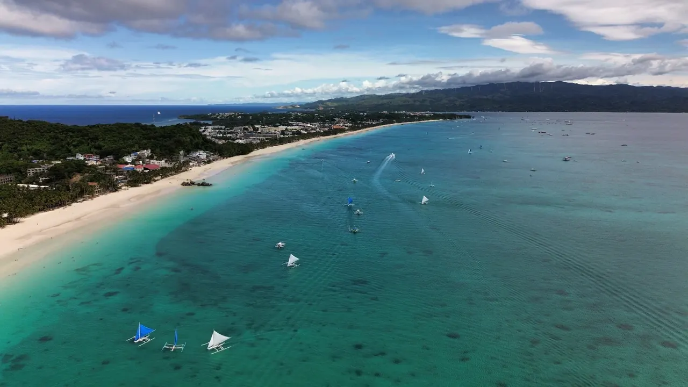
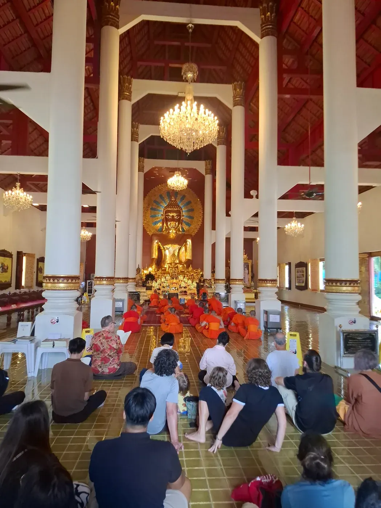
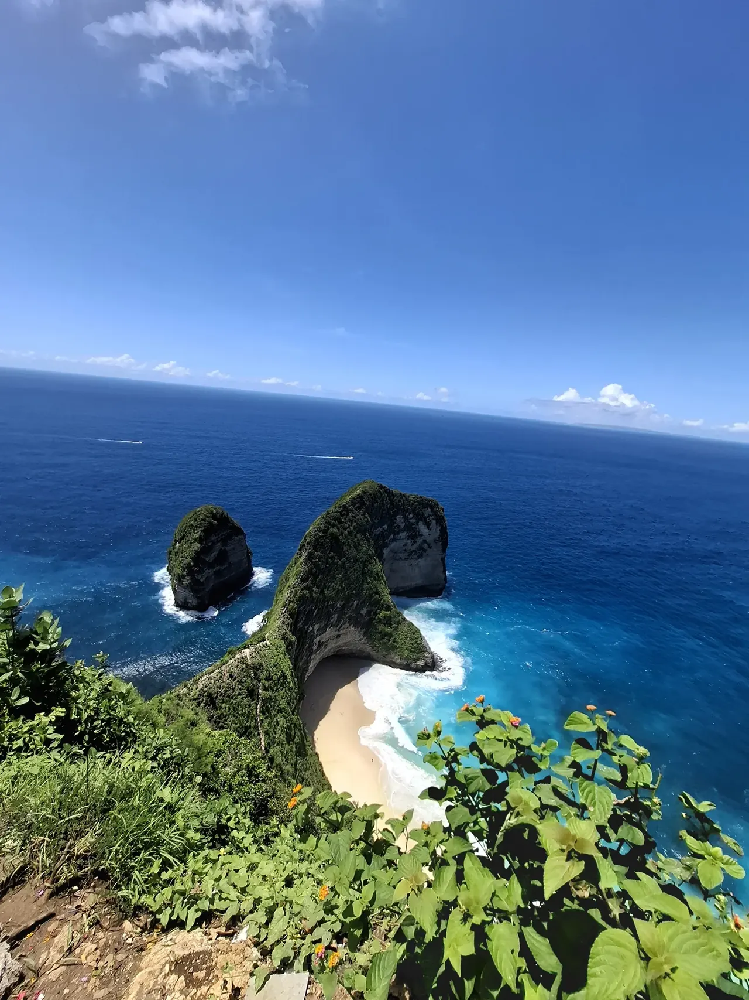
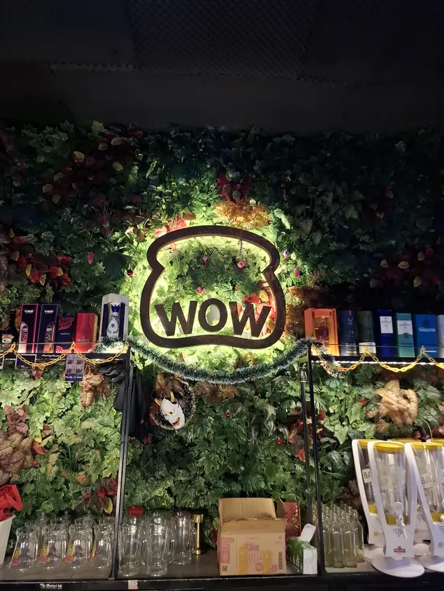
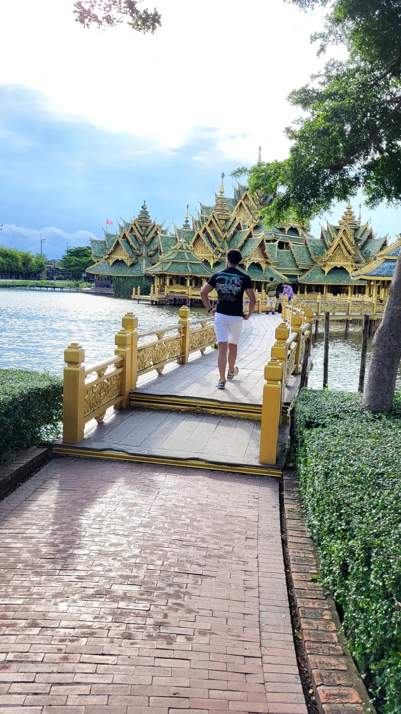
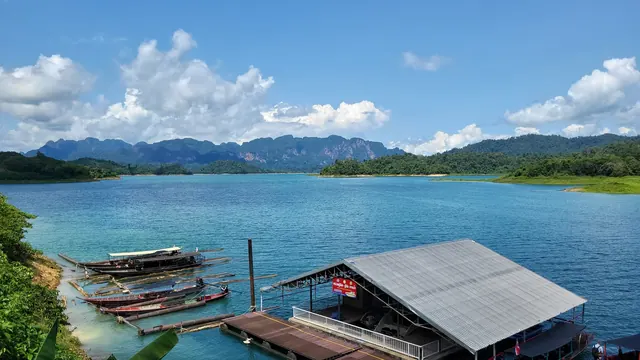

Small moments. Lasting memories.
Short moments and discoveries. Looking for the full journey? Choose Travel Stories in the collection below.
Newest entries first. Choose a card to read at your own pace.

Travel Story · Philippines · 2025 · with friendsBeneath the Philippine blue.
Oslob, Bohol, Boracay, El Nido and Manila. Island roads, late nights and a change of plans.
Read the story →Field Note · Philippines · 2025More to tell from the road
Island roads, rooftop sunsets and a change of plans. My Philippines adventure with friends became a story I could never have planned.
Read the note →
Travel Story · Thailand · solo travelThailand, on my own.
A separate chapter, with a different rhythm and room for discovery.
Read the story →
Travel Story · Bali · 2024–2025The famous influencer island…
Family, study life, island escapes and an unfiltered reflection.
Read the story →
Field Note · Bali · 2024–2025A local place became a ritual
Warunk WOW was a coffee stop by day and a small club at night. The staff and regulars made it feel like a second home.
Read the note →
Travel Story · Thailand · study exchangeThailand: the land of smiles…
Three months of study, culture, wildlife and new perspectives.
Read the story →
Field Note · Thailand · 2024Room to breathe
Four days around Khao Sok showed me how good it can feel to be present without a constant signal or a packed schedule.
Read the note →